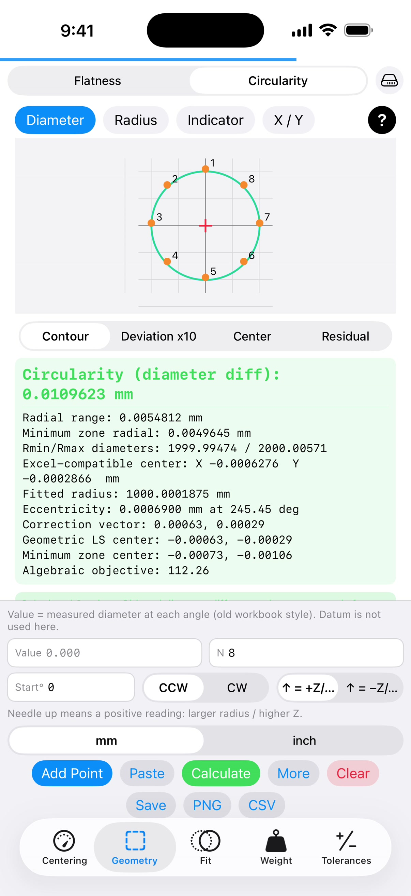

السطحية والدائرية — دون العودة إلى جدول البيانات.
سير العمل التقليدي معروف: تدوّن قراءات المؤشر، تعود إلى حاسوب المكتب، تفتح ماكرو Excel، تشغّل Solver، ونسخ الأرقام إلى التقرير. الإصدار 1.0.2 من CNC Workpiece Calculator يضع هذه الدورة كلها في جيبك — حلّار للمنطقة الدنيا للسطحية ومصنّف دائرية ثلاثي يعملان على الجهاز في أقل من ثانية، بجانب أدوات التمركز والتجميع والتفاوتات والوزن الموجودة أصلًا.
لإعداد وفحص ماكينات CNC، وورش التشغيل، ومهندسي الجودة، والتدريب. يعمل دون اتصال بالكامل على آيفون وآيباد — بلا حساب وبلا إعلانات وبلا تتبع.


Geometry جديد في 1.0.2
السطحية والدائرية حيث يصبح الفحص مؤلمًا. القياس نفسه يستغرق دقيقتين بمؤشر القياس — لكن الحساب هو ما يقتل المهمة: مسألة النطاق Z الدنيا التي لا يحلها أحد يدويًا، وتُوكَل عادة إلى ماكرو Excel مع Solver يعيش على حاسوب واحد، محروسًا بأقفال الملفات وتحذيرات الماكرو.
| الخطوة | Excel + Solver | CNC Workpiece Calculator |
|---|---|---|
| إدخال القراءات | الكتابة في شبكة على حاسوب المكتب | لوحة أرقام مخصصة عند الماكينة، آيفون أو آيباد |
| السطحية | تشغيل Solver والأمل في صحة إعدادات التقارب | برمجة خطية بسيكسية بطورين، فورية، مع حالة التقارب ظاهرة |
| التسوية | اشتقاق الأوتاد يدويًا من معادلة المستوى | نصائح تسوية لكل نقطة مع التحسن المتوقع |
| الدائرية | اتفاقية جدول واحدة، إجابة واحدة | مطابقات جبرية وهندسية وبالمنطقة الدنيا جنبًا إلى جنب |
| التقرير | لقطة شاشة للجدول | PNG بلمسة واحدة (مخطط + نتائج) أو CSV |
ثلاث مطابقات دائرية، مسماة بصدق
المربعات الصغرى الجبرية، وأفضل مطابقة هندسية، وبحث المنطقة الدنيا بـ Nelder–Mead تعمل معًا. يُعرض فرض القطر المتوافق مع Excel والمدى القطري الأضيق للمنطقة الدنيا منفصلين — لا جدال بعد بين الاتفاقيات القديمة والجديدة.
ستة مخططات عرض
التخطيط، الانحراف ×10، البواقي، المستوى ثلاثي الأبعاد، الكنتور، وتكبير المركز — بدّل مباشرة مع دخول النقاط. تُبرز النقاط المحددة، والمخطط يضبط مقياسه نفسه على بياناتك.
تصدير يناسب سير العمل
لمسة واحدة تولد PNG بأبعاد 1200×800 يتضمن المخطط ولوحة النتائج، مباشرة إلى الصور أو ورقة المشاركة. تصدر النقاط بصيغة CSV. وتُعاد الجلسات المحفوظة من لوحة المزيد.
كل ما يفعله غير ذلك
انضم تبويب Geometry إلى الأدوات التي جاء بها التطبيق سلفًا — كلها دون اتصال، وكلها على الجهاز.
تمركز قائم على المسبار
أدخل النقاط X/Y المقاسة (مع تعويض قطر المسبار) واحسب المركز/الهندسة للدائرة والمستطيل والقطع الناقص والمجرى المستقيم ونمط الدائرة المزدوجة.
تجميع العمود والفتحة
افحص بسرعة الحجم الاسمي + درجات التفاوت (مثل H7/h6) وشاهد نتيجة التجميع أثناء اختيار أنواع الفتحة/العمود الشائعة.
التفاوتات العامة
مرجع تفاوتات الأبعاد والهندسة (الاستقامة/السطحية، التعامد، الانحراف الدائري وغيرها) بنتائج واضحة للاستخدام في الورشة.
تقدير الوزن
قدّر وزن الأشكال الشائعة (لوح، أنبوب، قضيب، حلقة…) مع إعدادات مواد جاهزة وكميات ووحدات مترية/إمبراطورية.
مصمم لليد بالقفازات
لوحة أرقام مخصصة مع الاستبدال عند أول لمسة، وتبديل الإشارة، والتمرير التلقائي — لا صراع مع لوحة النظام في منتصف القياس.
دون اتصال وخاص
بلا حساب وبلا إعلانات وبلا SDK تتبع. تبقى الجلسات على الجهاز. ويعمل في شبكات الورش المقيدة لأنه لا يحتاج شبكة أصلًا.
تعليمات سريعة
خمسة سير عمل — الهندسة والتمركز والتجميع والوزن والتفاوتات.


لمن هذا التطبيق؟
ورش التشغيل وإعداد CNC
تمركز وتجميع وفحوص هندسية سريعة دون العودة إلى حاسوب المكتب.
الجودة والفحص
منطقة دنيا للسطحية والدائرية باتفاقيات مسماة بصدق — وتقرير PNG للإرفاق.
التدريب
أرِ للمشغلين الجدد ما تستعيده التسوية فعلًا، وكيف يبدو المستوى المطابق.
الأسئلة الشائعة
هل يمكنه استبدال ماكرو Excel للسطحية مع Solver؟
للاستخدام في الورشة، نعم — يحل تبويب Geometry مسألة النطاق Z الدنيا نفسها بحلّار بسيكس بطورين، على الجهاز، في أقل من ثانية. ويعرض قيمة السطحية والمدى الابتدائي والتحسن بالتسوية والمستوى المطابق ونصائح لكل نقطة. وللتوثيق التدقيقي صدّر النقاط بصيغة CSV وعالجها في أدواتك.
أي رقم دائرية يعرضه — فرض القطر القديم أم المنطقة الدنيا؟
كلاهما، مفصولان عمدًا: فرض القطر عند المركز الجبري (اتفاقية الجدول الكلاسيكية) والمدى القطري للمنطقة الدنيا (القيمة الأضيق المطابقة للمعايير).
كيف أدخل قراءات المؤشر للدائرية؟
بدّل إلى وضع المؤشر، وأدخل كمرجع Ø القطر الذي يظهر عنده المؤشر صفرًا، ثم أدخل كل قراءة بإشارتها. ويتوافق ضبط إشارة العداد مع طريقة تركيب مؤشرك (الإبرة للأعلى = نصف قطر أكبر أو أصغر).
على ماذا تُبنى نصائح التسوية؟
على المستوى المطابق للنطاق الأدنى. لكل نقطة مقاسة تُظهر التطبيق التصحيح الجسمي المقترح والبواقي المتوقعة بعد التصحيح — التحسن المتوقع من الوتد أو إعادة التسوية وحدهما، قبل أي تشغيل.
هل يمكنني تصدير النتائج لسجلات الجودة؟
نعم. لمسة واحدة تولد PNG بأبعاد 1200×800 يتضمن المخطط ولوحة نتائج مُبرزة، محفوظًا في الصور أو ورقة المشاركة. وتصدر النقاط المقاسة بصيغة CSV.
هل يحتاج التطبيق إلى الإنترنت؟
لا. تعمل جميع الحسابات والمخططات والجلسات المحفوظة والتصديرات دون اتصال.
هل يجمع أي بيانات؟
لا تُستخدم أدوات تحليل أو SDK تتبع. راجع السياسة الكاملة في صفحة الخصوصية.
هل يمكن استخدامه على آيباد؟
نعم — الواجهة مصممة لسير العمل على آيفون وآيباد معًا.
أين أبلّغ عن خلل أو أطلب ميزة؟
راسلنا على wangning.engineer@outlook.com.
التنزيل
جاهز لاستخدامه على أرض الورشة؟